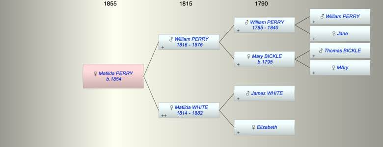

| [Index] |
| Matilda PERRY (1854 - ) |
|  |
| b. 1854 at Kelly Devon |
| Near Relatives of Matilda PERRY (1854 - ) | ||||||
| Relationship | Person | Born | Birth Place | Died | Death Place | Age |
| Grandfather | William PERRY | 1785 | 1840 | Kelly Devon | 55 | |
| Grandmother | Mary BICKLE | 1795 | Kelly Devon | |||
| Grandfather | James WHITE | |||||
| Grandmother | Elizabeth | |||||
| Father | William PERRY | 1816 | Kelly Devon | 27 Jan 1876 | Kelly Devon | 60 |
| Mother | Matilda WHITE | 28 Nov 1814 | Salisbury | 26 Jul 1882 | Kelly Devon | 67 |
| Self | Matilda PERRY | 1854 | Kelly Devon | |||
| Half Sister | Elizabeth Downing OLIVER | 1834 | Exeter | 1926 | Plymouth | 92 |
| Brother | William PERRY | 1841 | Kelly Devon | |||
| Brother | Jehu PERRY | 1843 | Kelly Devon | 1913 | Gulworthy | 70 |
| Brother | John PERRY | 1844 | Kelly Devon | 1873 | Kelly Devon | 29 |
| Sister | Elisa PERRY | 1846 | Kelly Devon | |||
| Sister | Solomon PERRY | 1851 | Kelly Devon | |||
| Brother | John PERRY | 1855 | Kelly Devon | |||
| Brother | George PERRY | 1856 | Kelly Devon | |||
| Uncle | Thomas PERRY | 1818 | Kelly Devon | |||
| Aunt | Mary PERRY | 1820 | Kelly Devon | |||
| Aunt | Elizabeth PERRY | 1822 | Kelly Devon | |||
| Aunt | Eliza PERRY | 1825 | ||||
| Aunt | Philippa PERRY | 1828 | ||||
| Uncle | John PERRY | 1829 | Kelly Devon | |||
| Aunt | Jane PERRY | 1832 | Kelly Devon | |||
| Aunt | Solomon PERRY | 1835 | Kelly Devon | |||
| Brother in Law | Robert H HAMMETT | 1838 | Stokenham | |||
| Sister in Law | Emma YOULDEN | 1843 | 1892 | Ontario | 49 | |
| Sister in Law | Elizabeth Florence MARTIN | |||||
| Events in Matilda PERRY (1854 - )'s life | |||||
| Date | Age | Event | Place | Notes | Src |
| 1854 | Matilda PERRY was born | Kelly Devon | Note 1 | ||
| 27 Jan 1876 | 22 | Death of father William PERRY (aged 60) | Kelly Devon | Note 2 | |
| 26 Jul 1882 | 28 | Death of mother Matilda WHITE (aged 67) | Kelly Devon | Note 3 | |
| Created on a Mac™ using iFamily for Mac™ on 12 Sep 2023 |